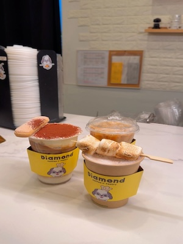
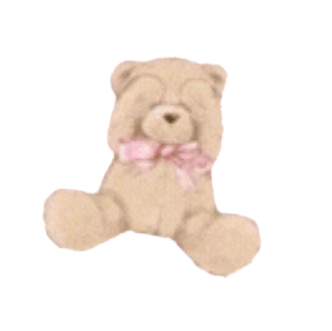
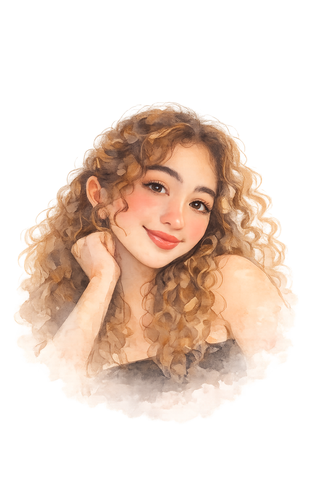
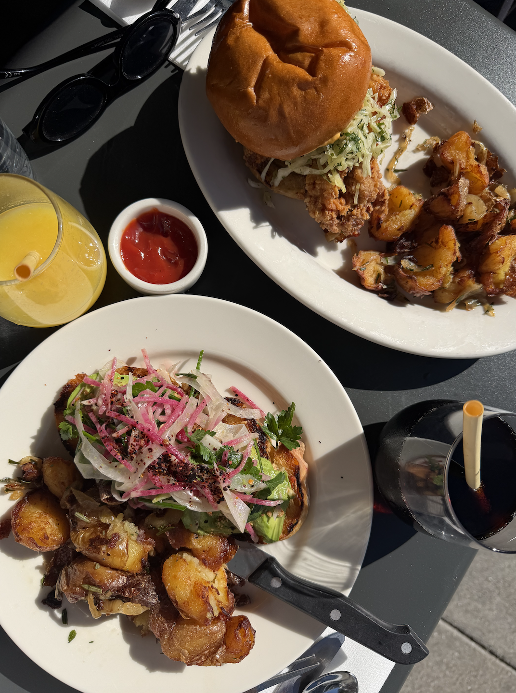
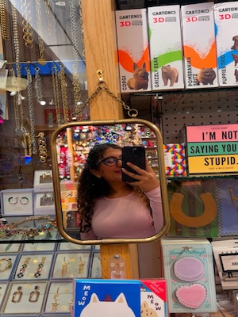
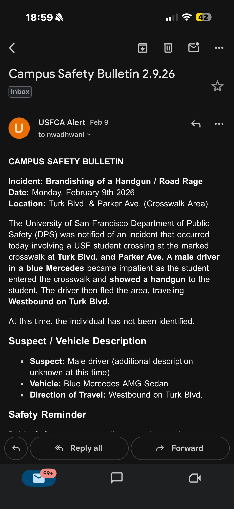
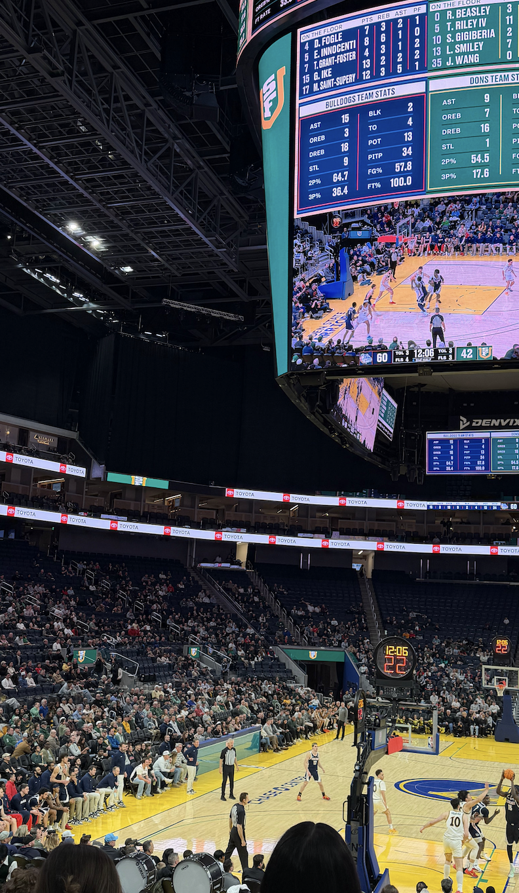
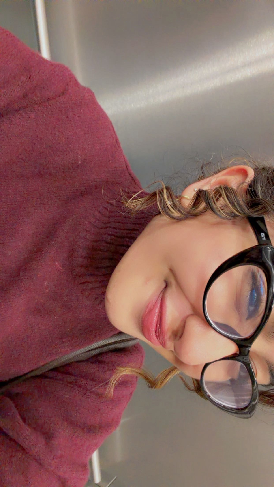
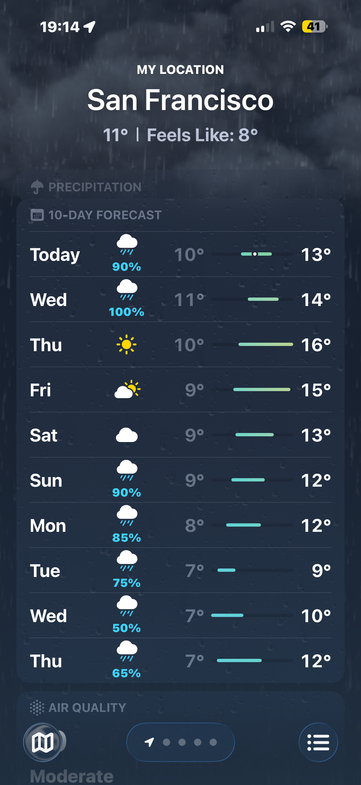

San Francisco Diaries 🍒

Coffee with friends
One of my favorite little rituals. Long conversations, warm drinks, and catching up on everything — it’s basically a reset button for my whole day.

Take me home ♡
San Francisco Diaries 🍒

One of my favorite little rituals. Long conversations, warm drinks, and catching up on everything — it’s basically a reset button for my whole day.
Daily moments 🎀

Somewhere between ambition and appetite, we found time for brunch. Sweet bites, warm sunlight, and conversations that felt like home these are the little moments I choose to romanticize.
Weekend energy 🛍️

A quick weekend “treat myself” moment. I love exploring little stores and finding cute things that feel like me.
Campus life 📩

Because my life is also… emails. This one was about campus stuff, and honestly it’s a huge part of my day-to-day routine.
Morning chaos ⏰
My alarms are honestly chaotic… but they work. This is the real start of my day — before coffee and before motivation kicks in.
Game Night

Game nights just hit different. The crowd was loud, everyone was hyped, and we were fully screaming like it was personal. It wasn’t just about basketball it was about being there together and actually living the moment. Definitely one of those college memories I won’t forget.
Self-care 💇♀️
A mini self-care moment. It takes time, but it’s kind of relaxing — like a little routine I do just for me.
Late night grind 📚

The “I’m tired but I’m showing up” era. Some nights are just class + deadlines + powering through.
Matcha quest 🍵
I take matcha seriously. This was me searching for the perfect one in the city — it’s basically a hobby at this point.
Music mood 🎧
My background soundtrack for everything — studying, walking around SF, and pretending I’m in a movie.
SF weather 🌧️

SF weather is unpredictable, so I’m always checking. It’s either cute sunny vibes or windy survival mode.
Little adventures 📍
A small moment that feels like a mini adventure. I love exploring new places — even if it’s just a quick stop.